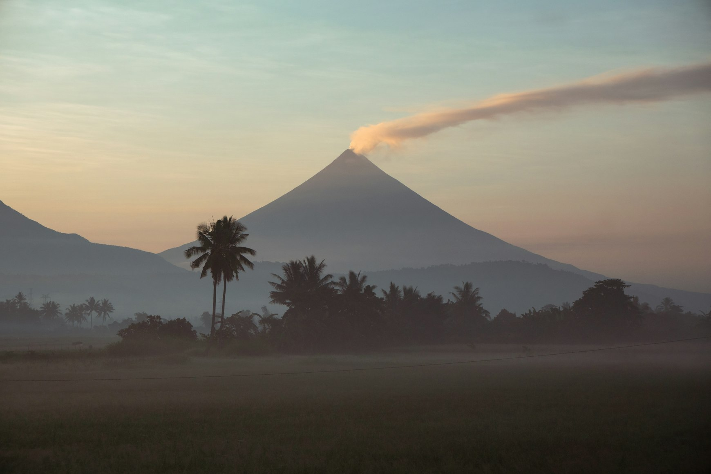
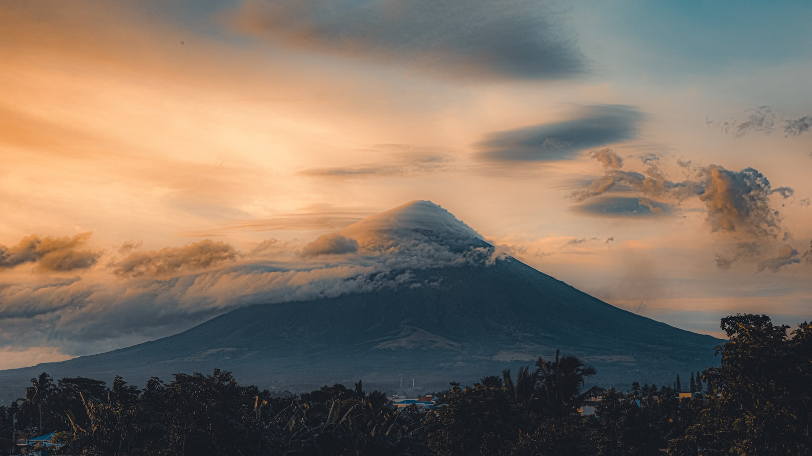
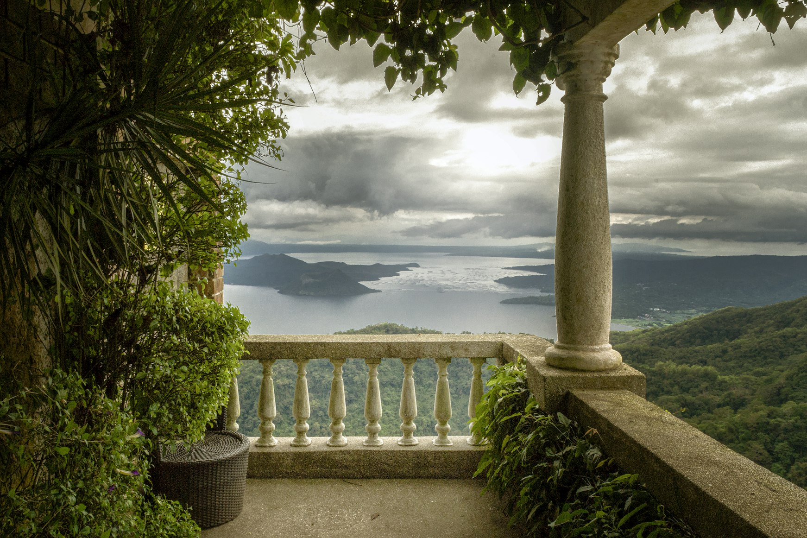
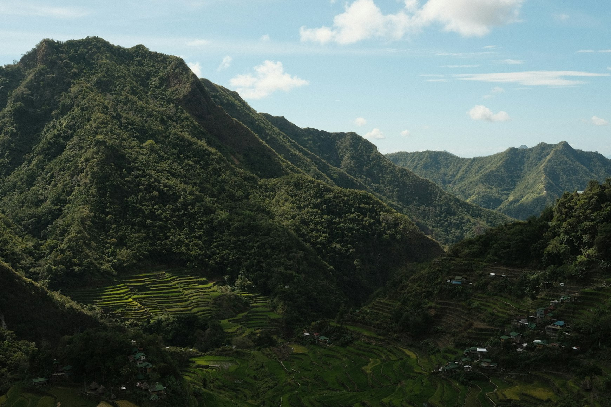

The Philippines Most People Never Imagine
Beyond the beaches, the Philippines becomes something stranger: volcanic, humid, unstable, and shaped by mountains that still breathe.

Beyond the Beaches
Most people arrive in the Philippines expecting water.
Turquoise shallows. White beaches. Palm trees bending toward the sea. The country exists online as a chain of tropical islands floating somewhere between honeymoon fantasy and diving footage.
But the landscape changes quickly once you leave the coast.
Roads begin climbing into mountains wrapped in fog. The air cools unexpectedly. Rice terraces appear beside black volcanic soil. Entire towns sit beneath perfectly shaped cones that still release smoke into the sky. In some regions, the earth feels less stable than the weather.
The Philippines is one of the most volcanically active countries in the world, though surprisingly few travelers seem to realize it before arriving.
More than twenty volcanoes remain active across the archipelago. Some dominate entire horizons. Others sit quietly inside lakes, surrounded by fishing villages and jungle-covered slopes that look almost peaceful until the ground begins moving again.

A Tropical Volcanic Landscape
And what makes the Philippines feel different from volcanic countries like Iceland or Japan is the tropical atmosphere surrounding everything.
Volcanoes here rise through dense vegetation and humid air. Banana trees grow near lava fields. Palm trees stand beside evacuation roads. Boats cross crater lakes beneath clouds that can change shape in minutes. The landscape feels alive in a way that is difficult to explain until you see it yourself.
In southern Luzon, Mayon Volcano rises almost unnaturally above the surrounding countryside. Its shape is so symmetrical it can appear artificial from a distance, especially in the late afternoon when clouds move across the upper slopes and rice fields reflect the remaining light below.
Entire communities continue living in its shadow despite regular eruptions.
Children walk to school beneath a volcano that can become dangerous without much warning. Jeepneys move through roads layered with old ash. Markets operate normally while evacuation signs stand permanently beside highways.
The contradiction becomes part of daily life.

The Volcano Inside the Lake
Farther north, Taal Volcano feels even stranger.
From certain viewpoints, the geography almost stops making sense. A volcano sits inside a lake, which itself sits inside the crater of a much larger ancient volcano. Boats cross dark water toward islands formed by previous eruptions while mist moves slowly across the surface in the early morning.
The scenery can feel calm one moment and deeply unstable the next.
After eruptions, ash sometimes reaches Manila, covering cars, rooftops, and streets in fine grey dust while life continues around it almost immediately afterward. In the Philippines, volcanic activity rarely feels distant from ordinary life for very long.

Landscapes Shaped by Eruptions
Even the roads begin revealing it.
In parts of Luzon, black volcanic rock appears beneath tropical vegetation after heavy rain. Rivers cut through old ash valleys left behind by eruptions decades earlier. Around Mount Pinatubo, entire landscapes still carry the aftermath of the massive 1991 eruption that reshaped surrounding provinces and darkened skies far beyond the Philippines itself.
Yet vegetation always seems to return quickly here.
That may be what feels most unusual about the volcanic landscapes of the Philippines. Destruction rarely remains visually empty for long. Jungle regrows around lava rock. Grass pushes through ash. Humidity softens the edges of disaster faster than many people expect.

A Country Built Above Moving Ground
The country often feels suspended between tropical beauty and geological instability.
You notice it most during bad weather.
Clouds collect low around mountain slopes. Rain arrives suddenly. Steam rises from wet roads. The horizon disappears behind grey volcanic fog while motorcycles continue moving through it as if nothing unusual is happening.
And slowly the Philippines begins feeling less like a postcard and more like a living tectonic landscape — beautiful, unstable, humid, and constantly reshaping itself beneath the surface.
Most travelers come looking for the ocean.
Very few expect to remember the mountains instead.